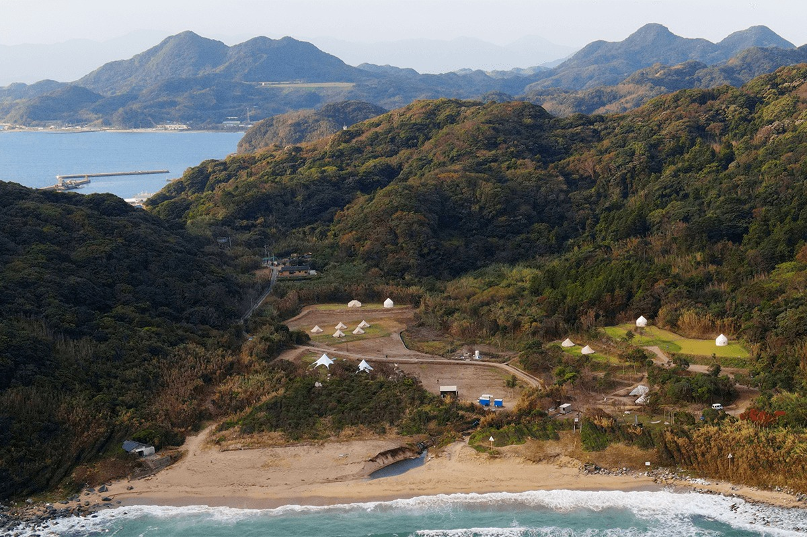
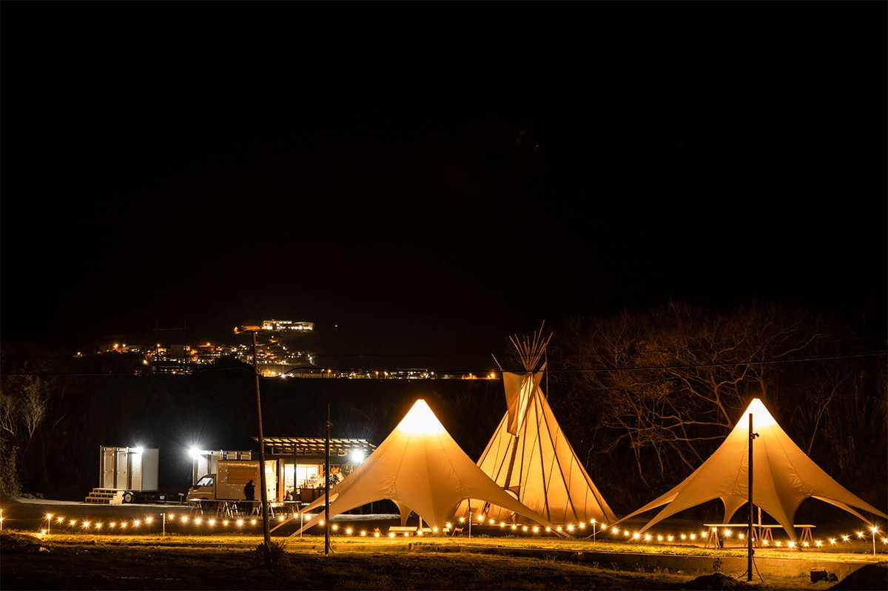
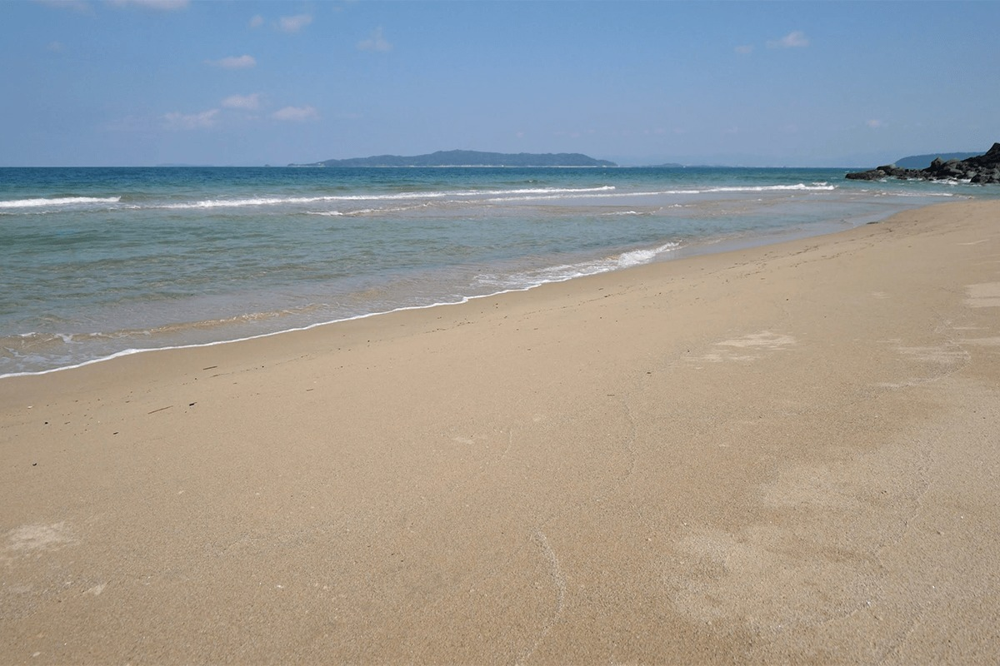
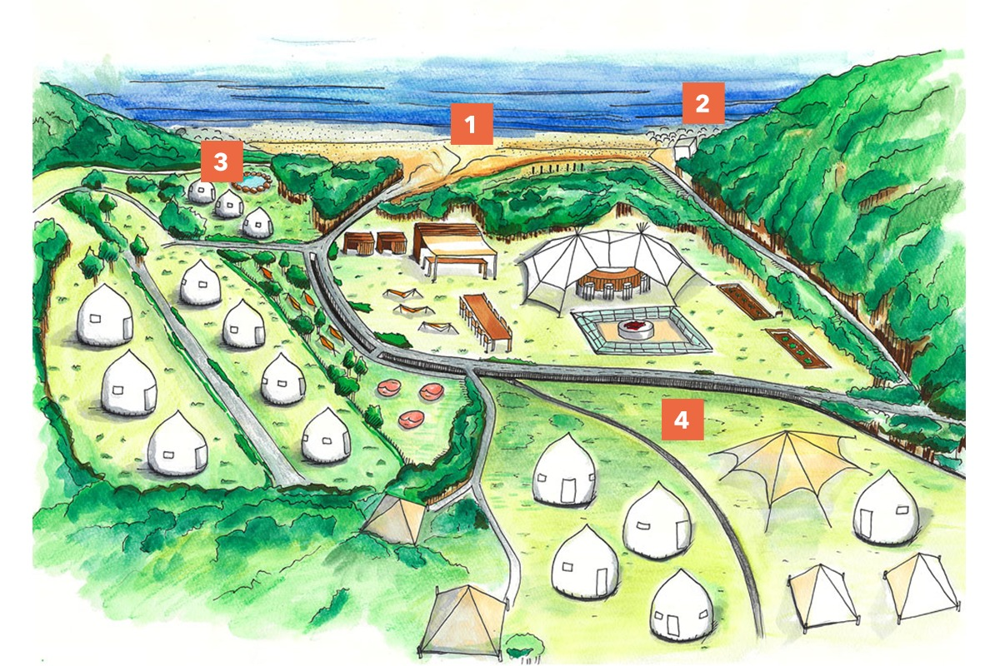
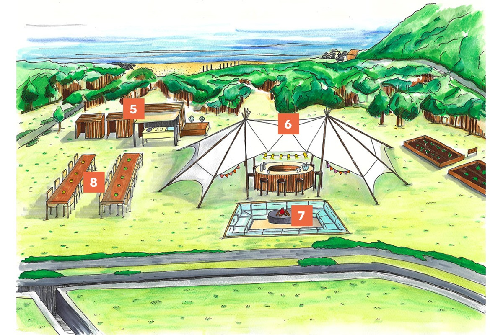
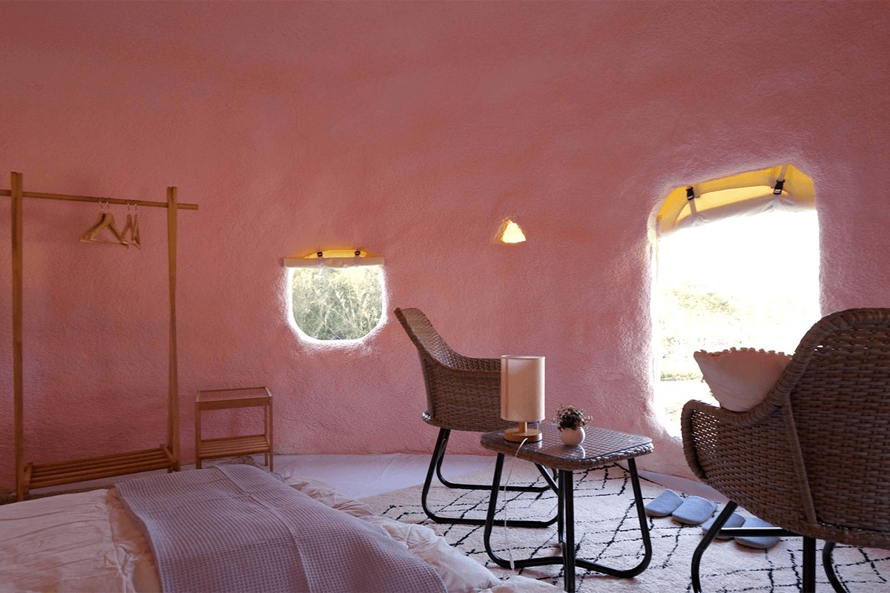
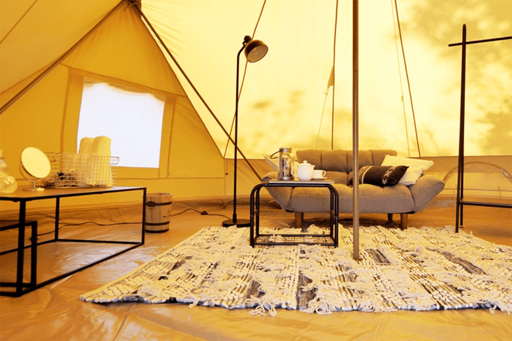

Префектура Фукуока · Фукуока, Карадомари · глэмпинг
KARADOMARI VILLAGE: глэмпинг в старой рыбацкой деревне, где гостей называют жителями

В рыбацкой деревушке Карадомари на краю полуострова Итосима когда-то ночевали японские послы, отправлявшиеся в Китай. Теперь на бывших заброшенных полях за деревней стоят палатки KARADOMARI VILLAGE, а гостей здесь называют не постояльцами, а жителями.
Место
Карадомари: гавань, откуда плыли в Китай
Карадомари стоит на северо-восточной оконечности полуострова Итосима, на западной окраине города Фукуока, недалеко от границы с префектурой Сага. Земля под глэмпингом долгие годы пустовала: это были брошенные поля. Проект стал первым в стране примером того, как районный совет, совет квартала Карадомари и частная компания подписали соглашение о совместном развитии местных ресурсов. Глэмпинг стал первым шагом этой программы, и своих гостей здесь называют «жителями деревни». В 2021 году площадку продолжали достраивать всей округой: появлялись место для костра, бар у пляжа и другие уголки под открытым небом.

Карадомари с давних времён живёт рыбной ловлей, а история её названия уходит на 1500 лет назад. Здешнюю гавань считают одним из старейших сохранившихся рыбацких портов Японии: она известна с периода Нара (710–794). Здесь останавливались на ночлег участники посольств кэнтоси, которых японский двор отправлял в Танскую империю. Гавань была важной точкой на морском пути за границу, и раньше её название записывали другими иероглифами. Со временем место, где «ночевали послы в Тан», стали называть Карадомари: «танская стоянка».
Когда-то отсюда начиналась дорога в большой мир. Сегодня Карадомари находится рядом с городом, но сохранил облик старой японской рыбацкой деревни. Создатели глэмпинга хотят, чтобы сюда, как когда-то послы, приезжали люди с духом первопроходцев и чтобы деревня стала местом встреч.
Идея
Назад к пляжу

За домами деревни прячется пляж, который местные жители с давних пор ласково зовут Усиро-хама, «задний пляж». Отсюда и главная идея глэмпинга: «Назад к пляжу». В ней уважение к тому, что жители Карадомари передавали друг другу со времён посольств в Китай: время, проведённое у красивого моря, делает обычную жизнь спокойнее и богаче. Гостям здесь хотят напомнить, как хорошо жить рядом с морем.
Территория
Новая деревня над морем Гэнкай-нада
Деревня раскинулась на берегу с видом на море Гэнкай-нада. Её план на рисунках 2021 года разбит на пронумерованные зоны.

1. Пляж Усиро-хама. Местные любят его давно, а в путеводителях о нём почти не пишут, поэтому белый песок здесь остался нетронутым. В море виден остров Гэнкай и другие острова, и легко представить, что чувствовали послы, уходившие отсюда в далёкое плавание.
2. Бар у пляжа. В 2021 году его только собирались открыть в заброшенной молельне на возвышенности. Оттуда видны пляж и море Гэнкай-нада, и коктейль можно пить на морском ветру.
3. Палаточная сауна и бассейн. Сауну по финской традиции здесь можно попробовать без лишних хлопот. Согреться в мягком тепле дров, потом прыгнуть в холодный бассейн и повторить несколько раз: по словам создателей, это приводит в порядок нервы и тело.
4. Частная зона мастеров. Отдельная площадка, где ставят «мгновенные дома» и палатки. Она задумана как база для ремесленной работы в деревне.

5. Кухня и туалеты. Холодильник заполнен свежими продуктами, в основном местными, напитки без ограничений. Гости пользуются кухней в любое время, а туалеты оборудованы электронным биде.
6. Центральная площадь. Над ней натянут большой постоянный тент, который защищает от ветра, дождя и солнца. Здесь мастера и местные умельцы проводят разные занятия для гостей, и даже новичок быстро чувствует себя своим.
7. Место для костра. В 2021 году его ещё только обустраивали. Большой очаг сделан ниже уровня земли, как японский стол-котацу с углублением для ног, и вокруг него можно устроиться на диванах.
8. Обеденная зона. Местные продукты и напитки во время проживания включены без ограничений. Посуда и всё для готовки есть, так что ужин можно приготовить вместе с близкими.
Ночлег
Не палатка и не дом


Ночевать можно в «мгновенном доме». Это и не палатка, и не дом: необычное жилище округлой формы, построенное по новой технологии, о которой много писали в Японии. Такой ночлег в 2021 году предлагали только здесь.
В Японии всё больше говорят о «местном самосознании», чувстве принадлежности к своей земле. В Карадомари оно превращается в новый вид путешествий, когда гость на время становится частью деревни.
В 2021 году ночь с тремя приёмами пищи стоила 24 200 иен с налогом со взрослого. Продукты и рецепты дают, а готовят гости сами. Глэмпинг работает и сейчас, но планы и цены с тех пор менялись, поэтому актуальные варианты лучше смотреть на официальном сайте.
KARADOMARI VILLAGE
- Адрес
- префектура Фукуока, Фукуока, район Ниси, Мияура
- Как добраться
- от станции Хаката по линии метро Куко до станции Кюдай-гаккэн-тоси, дальше автобусом до остановки Мияноура; парковка в рыбацком порту Карадомари
- Заезд / выезд
- с 13:00 / до 15:00
- Цены / Вход
- за 1 ночь с человека, с налогом: взрослые (с 13 лет) 24 200 иен, школьники младших классов 12 100 иен, дошкольники бесплатно, питомец 2200 иен
- Сайт
- karadomari.jp